The objective is to build a portable and standards-compliant dual-tone multi-frequency (DTMF) numeric detector in order to communicate by text through sound. Alpha-numeric detection was also considered via "T9" numpad entry. This is also to practice building with documentational clarity, modularity, known and real communication standards, and with user-configuration in mind.
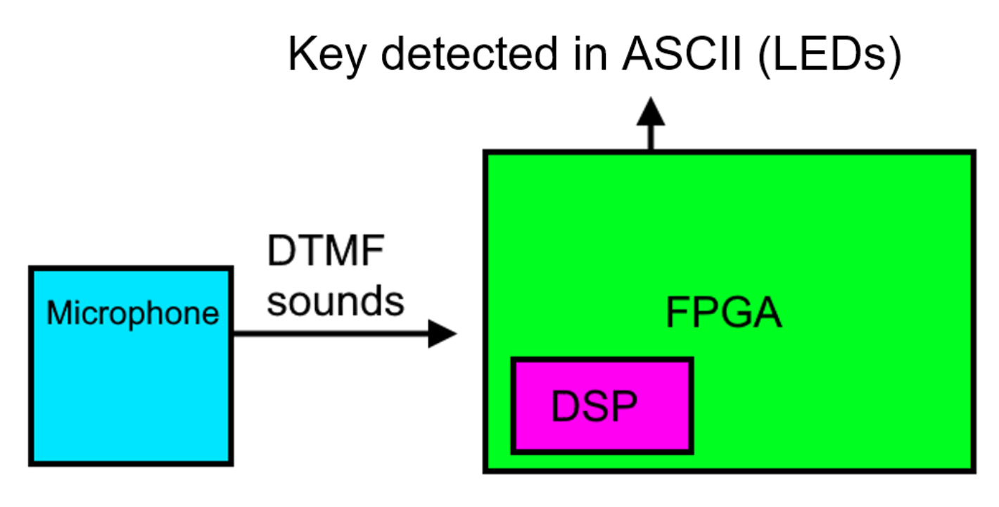
Figure 1. High-level architecture of the DTMF detector.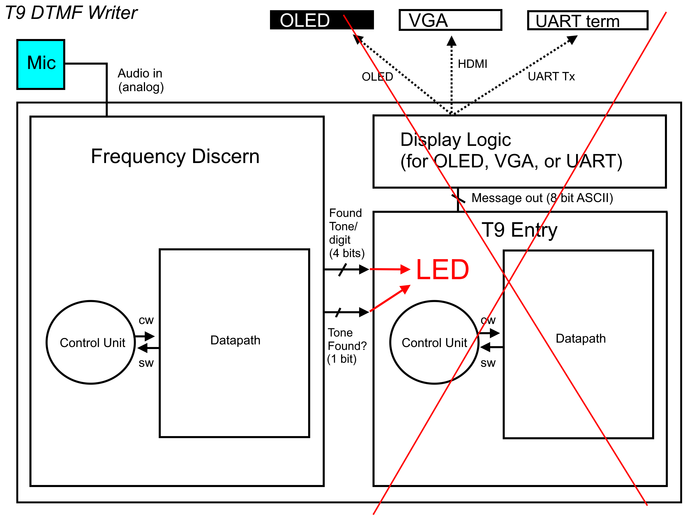
Figure 2. The proposed architecture with all planned modules (Frequency Discern, T9, and Display Logic) abstracted to datapath and control. The two main modules would have divided into each's own set of datapath and control.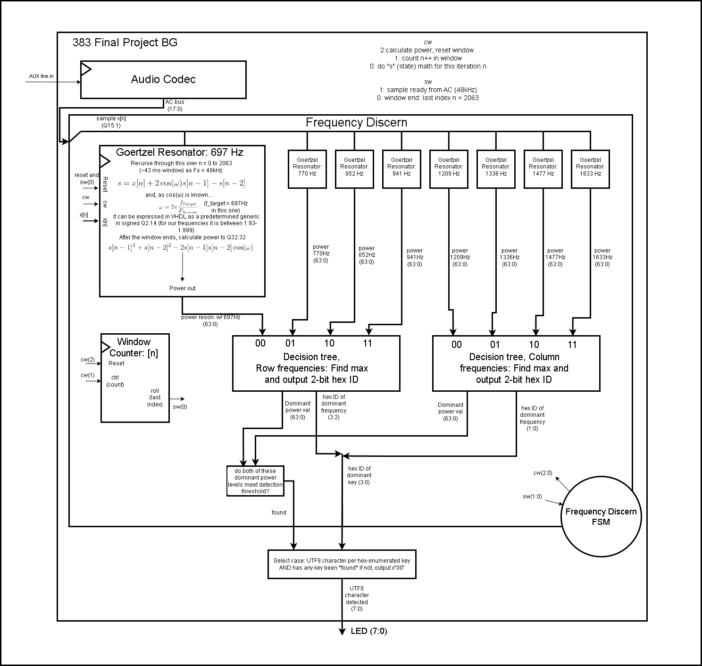
Figure 4. An updated, lower-level diagram of the entire project's completed datapath. The FSM is abstracted; its diagram will be shown later. Control and status bits are defined above to the right of the Audio Codec. The Audio Codec turns an analog AUX signal into an 18-bit signed value sampled at 48 kHz, which is an input (after having been truncated to 16 bits and treated as a fixed point Q15.1) to, inside the Frequency Discern unit, eight "Goertzel Resonators," which are in place to determine correlation values between the heard sound signal and each tuned target frequency. "found" and "key" are the same things as "Tone found?" and "Found tone" from Figure 2 respectively.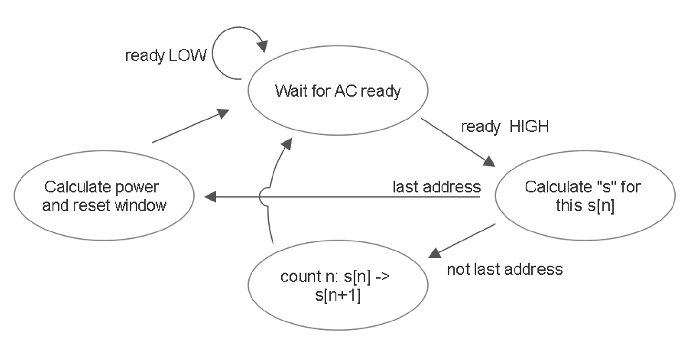
Figure 9. FSM for Frequency Discern. The "last address" or end of window is n = 2063. The state of calculating power and resetting the window tells the Goertzel resonator units such through the control word, who then calculate this window's power result and then reset themselves (reset state variable s[n] to 0, s[n-1] = 0, s[n-2] = 0).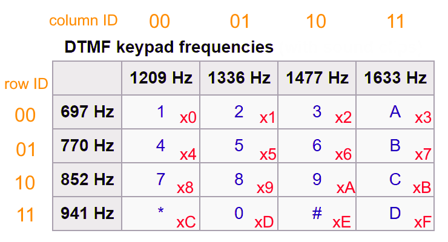
"key" (the same thing as "Found Tone" from Figure 2) is 4 bits or one hex digit representing the value of a key, following the diagram below.LEDs were implemented as the output display to concurrently show which key was being detected. It would output 8-bit ASCII, or UTF8, allowing not only the digits but the #, *, and A B C D keys to be communicated without demanding special knowledge of the meaning of an LED pattern to someone unfamiliar with my project.
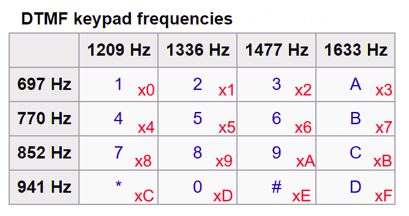
Figure 3. DTMF keypad model. DTMF started in 1963 under the trademark "TouchTone" by Bell Labs, and since has become an open standard everywhere. Keys include all digits, *, #, and A B C D on the right. That 4th column, uncommon to landlines and cell phones, is still used today by networking and amateur radio (Wikipedia). When one key is pressed on a DTMF pad, It plays a sound that is a sum of the row frequency and column frequency shown. For example is "4" was pressed, 770 Hz (the row "4" is in) and 1209 Hz (the column "4" is in) play at the same time; a sum of two pure sines. The reason the frequencies are odd values is so that none of them are harmonics (multiples) of each other, and also for voice processing and clarity reasons. The red hex enumerations on each key are there for the decision of the tone, and better explained in detail after having gone over the datapath.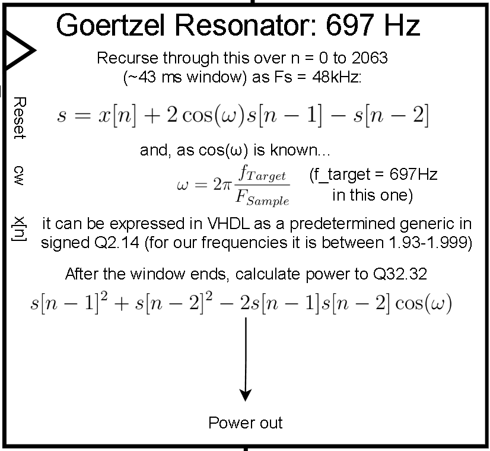
Figure 5. Goertzel Resonator. The name is for the Goertzel algorithm, a recursive calculation of a state variable "s" or "s[n]" which adds the input signal x[n] to a predetermined coefficient 2cosω times the previous state value s[n-1] and subtracts s[n-2] from that. 2cosω is known beforehand because ω is the target frequency divided by the sampling frequency (it is like saying cos(2πft) because time in sampling = nT, n being the sample index and T being the sampling period. "n" is not included in Goertzel's ω, so the result 2cosω only varies if the target frequency varies. Therefore there are eight coefficients to consider, available in our VHDL as generic constants (next figure). That state formula is like a differential equation in digital signal processing; a transfer function can be derived from it. If the target frequency is close to the frequency of x[n], then the state variable increases faster (it resonates more powerfully). The longer the window, the larger s gets. Our window (2064 samples, 43 ms) will produce a final (end of the window) s-value on the order of 10^3 when the signal and target frequencies match. It would be much larger if x[n] was not normalized to signed Q1.15. Final s is high when matching, low when not matching. To find correlation power values, following Figure 3, there are eight resonators because there are eight target frequencies - four lower on the rows, and four higher on the columns. All resonators work in parallel according to the single FSM. At every window's end (every 43 ms), the power will be calculated. The formula is seen in the figure. It gives the same result as (and is a rearranged version of) I^2 + Q^2, which stand for "in-phase" and "quadrature" (out of phase by 90 degrees), or in other words real^2 + imaginary^2. After calculating power in parallel, those values are compared to find the highest resonance out of the four row frequencies and the highest resonance out of the four column frequencies, which intersect over the key we conclude was heard.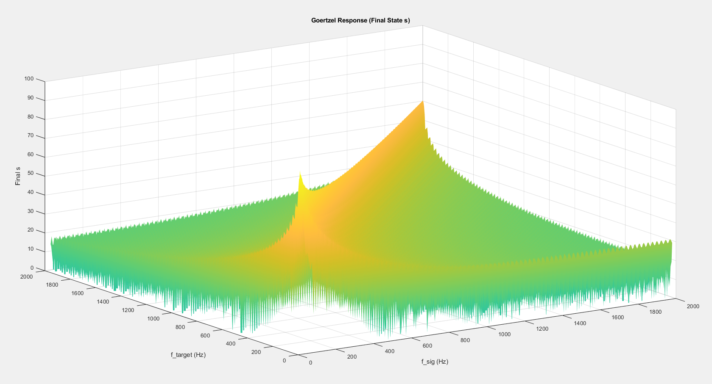
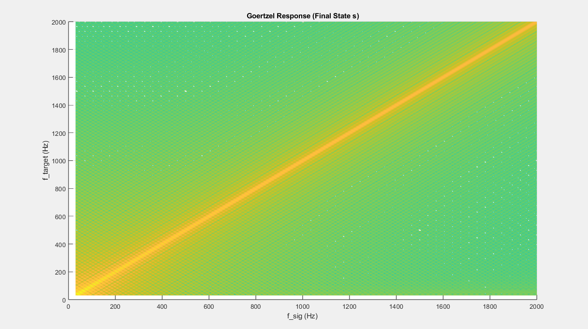
Figure 6. Final resonance state over both target and signal frequency. See how if the signal frequeny is the same as the target frequency, then the result is large and s grows fast. If they are different, it is small, so s would not grow big during the recursion window.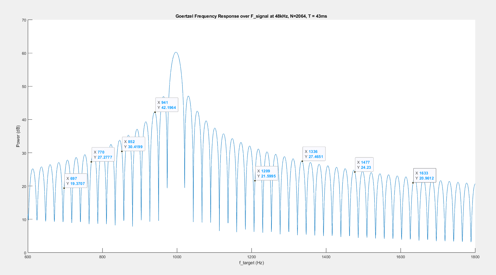
Figure 7. Power response and how well the gain lobes are optimized to the exact DTMF frequencies. This response is specific to the fact that we sample at 48 kHz and our window is 2064 samples long. See f_target = 697 Hz and 1209 Hz: Them responding halfway down the lobe (in decibels) is to say that, since they fall down to the left, if a tone only 10 Hz higher were played as the input, the resonance would be more efficient than if the target frequency were played. This is not the entire response, given our above figures. It is only to say that our resonators would have a better or more efficient time detecting 941 Hz than they would detecting 697 Hz. Power over target frequency and signal frequency can also be considered.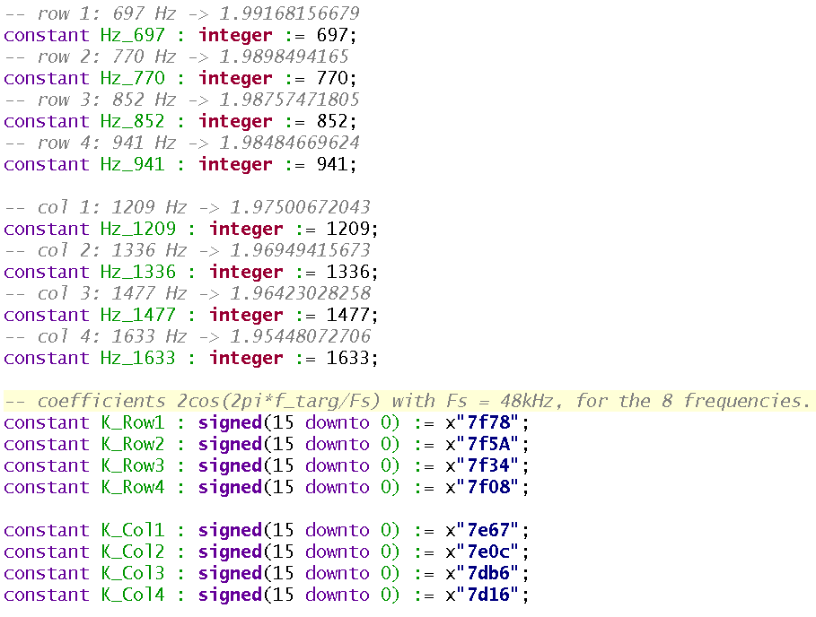
Figure 8. Coefficients defined in a package file. The frequencies are also defined integers, though their enumerations are just their frequency values, it is to prevent fat-fingering and to emphasize the constancy of the target frequencies for DTMF rather than whatever value someone wants. The lower target frequencies (like 697 Hz) result in a 2cosω = ~1.99, and the higher like 1633 Hz results in 2cosω = ~1.95.) They are defined in fixed point signed Q2.14, and called "K". Generics are defined for the Goertzel resonator units as the integer frequencies for readability the needed coefficient is selected with a multiplexer in each unit using the frequency generic as the select value.The Goertzel resonator entity uses fixed point in all of its calculations:
This allows:
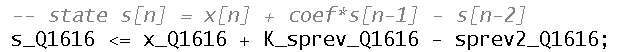
when "s_prev" and "s_prev2" mean s[n-1] and s[n-2] respectively. Next, power can be calculated as a Q32.32, three products of Q16.16 added (one of them subtracted):
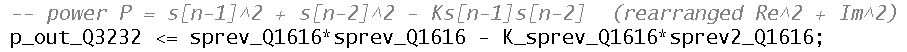
Q16.16 for the state value allows for growth of our order - 10^4 could be seen as a max with a generous pillow. 32 bits also can generously hold a power value on the order of 10^9. Rather than truncating such a value, to retain small values for testing of thresholds, I kept the output result a 64-bit word. Then the value will be compared with the 64-bit results from the other 7 resonator instantiations.
Found in the following "Functionality & Requirements" section, in A-level, is T9 entry. T9 is a user-level protocol that numpad-only devices like flip-phones use to express an alpha-numeric message. A batch of letters share a number, and a letter is arrived at by pressing the number one, two, three or four times depending on the letter.
Such user entry was considered on this project - an FSM was started but not finished. Its drawing is below.
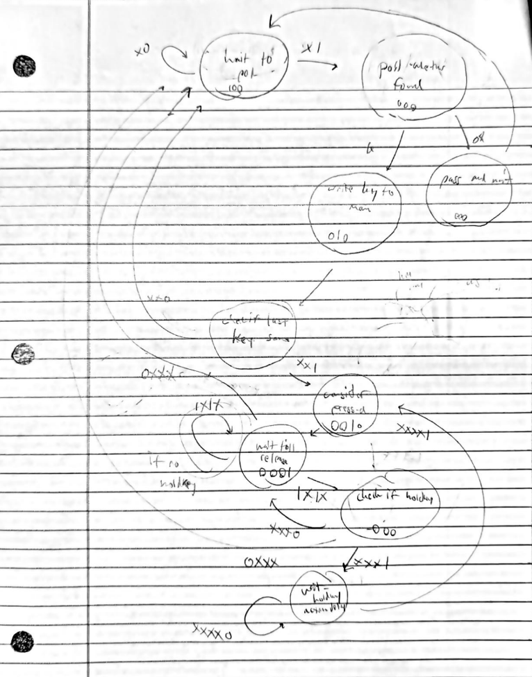
It will be required to discern incoming DTMF sounds for the user to be able to enter something into the system. That is what "Find frequencies" and "User entry" points mean below. Any display beyond the Bare Functionality can be done with the on-board OLED or on VGA.
T9: Be able to type numbers 0-9, *, (that is, have a fully functional numeric-only mode). The outputs are (1) an 8-bit vector of ASCII for the current arrived key, with a special key like NULL (0x0) to say nothing is being typed and (2) one bit to denote when to move on to the next key. If a number is held, it shall repeat or spam like a computer keyboard does. # key shall act as a backspace
The demon turning into gradescope now will finish and send another way with this part done
conclusion Factor in gain reponse for future design considerations.
Since my project never worked, this would take some more contribution before anyone can see it operate. Plug in a microphone to "Line In" on the FPGA, turn the FPGA on, and of course have it programmed with this project's bitstream. I used the blue microphone in the 383 computer lab. If that's still there, use that. That one had a USB-C plug in, allowing me to power it with my laptop and play DTMF tones straight into it. I also had audio loop back to a speaker through "Line Out" on the Nexus Video, which helped a lot with testing, so that should be done too. A DTMF simulator can be found on the internet, and operation attempted by holding your phone to the microphone and playing tones or playing through your computer if you have the plug-in option for the microphone.